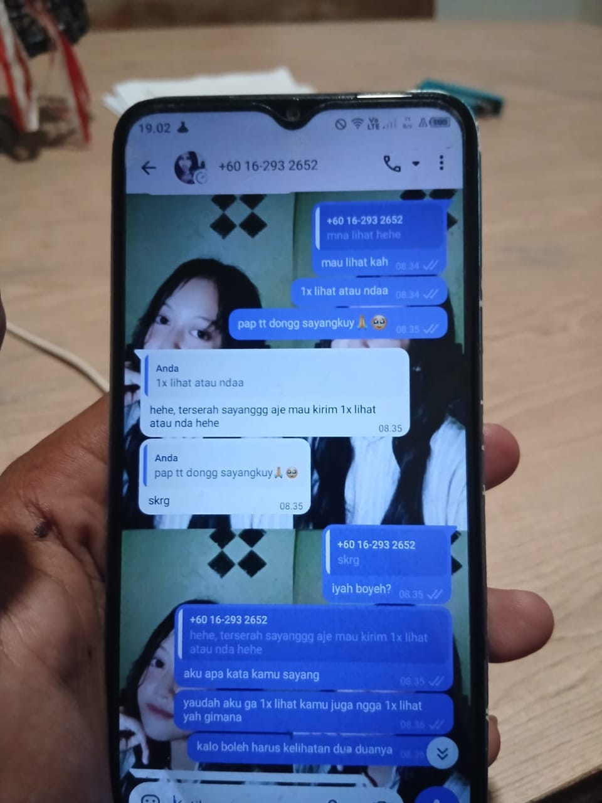
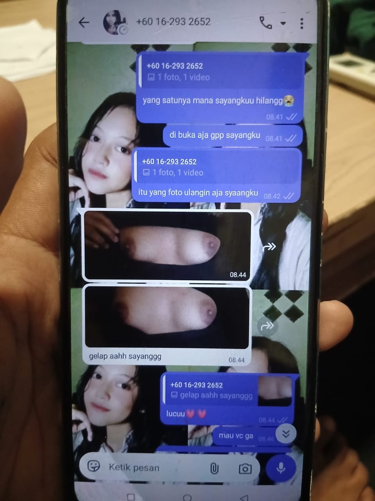
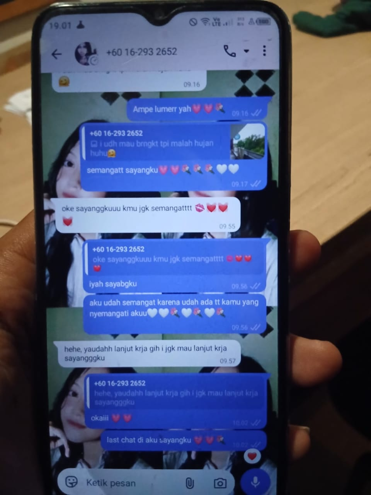
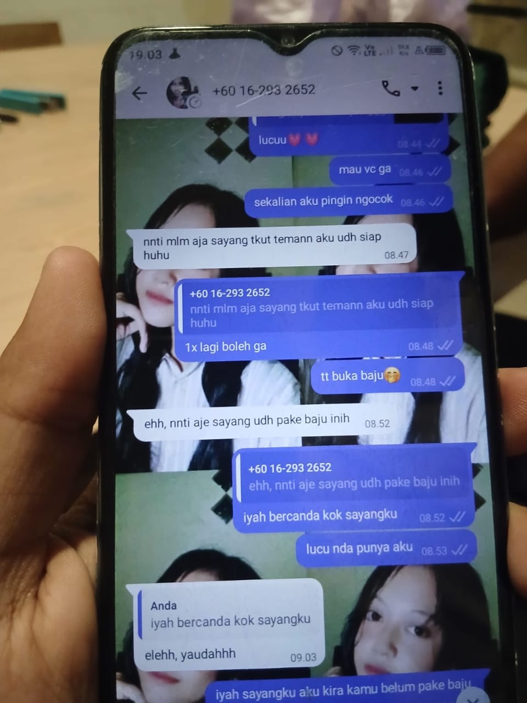

BUKTI YG TERSEBAR
5 Dokumentasi kegiatan dan praktikum A-Tjkt1

DOKSLI_01.JPG

DOKSLI_02.JPG

DOKSLI_03.JPG

DOKSLI_04.JPG
DOKSLI_05.JPG
Rekaman Video
4 Video dokumentasi aktivitas kelas
BAGIKAN DOKSLI
Akses Cepat via Barcode
Scan QR Code (Barcode) di samping menggunakan kamera HP untuk membuka halaman web doksli A-Tjkt1 ini secara langsung. Kamu juga bisa mengubah link tujuan barcode di bawah.